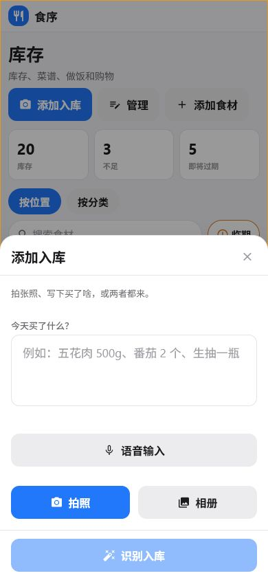
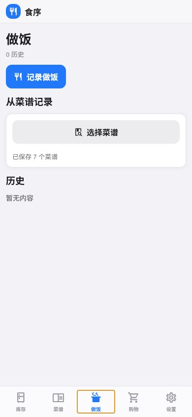
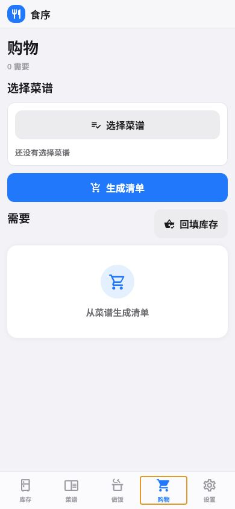

存在手机里
核心数据都在你手机里，卸载 App 之前一直都在。
库存、菜谱、购物，本来就该是一回事
入库、做饭、买菜这几件事，在 Mise 里是互相通的：这批食材什么时候过期、这道菜要用多少、购物单上还缺什么，都对得上号——但要不要这么做，还是你说了算。
库存不糊涂
再买一次同样的食材，数量是加上去，不是盖过去。每一批都记着自己的购买日期、保质期、存放位置，快过期了会提醒你，找东西也能直接搜。
智能入库
照片或语音会被整理成可以修改的字段——分类、位置、保质期都帮你猜好了。猜得不对，或者干脆没识别出来，手动表单随时都在。

菜谱与做饭
用标签和搜索找菜谱，调个份数就知道大概要扣多少库存，你点了确认才真的扣。哪怕把食材从库存删了，菜谱也不会跟着坏掉，做过什么饭都能翻记录。

少买不重买
选好想做的几道菜，清单会自动减掉家里已经有的，只留下真正要买的量。买完回来，勾一下就能重新计入库存，不用再手动录一遍。

从入库到下一次采购
你的数据，你做主
库存、菜谱、购物清单、做饭记录，都存在你手机本地。只有你用拍照识别或语音输入这些功能时，信息才会传到服务器处理一下；平时你家里有什么、做过什么菜，都不会传出你的手机。
核心数据都在你手机里，卸载 App 之前一直都在。
服务器只处理你发起的识别请求，不会用来存你的库存数据。
AI 给的结果先给你看一遍、改一改，你点确认了才算数。
Mise · 食序